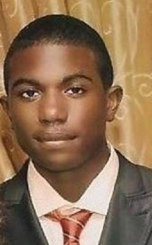

<!DOCTYPE html>
<HTML lang="en"/>
<head>
				<link rel="stylesheet" type="text/css" href="main.css"/>
				
				</head>
<style>
body {
background-color: white
}

border {
	border-bottom-color: white
}	
li {margin: 5px 20px;
list-style-type: none;
display: inline;
font-size: 32px;
}

.home, .about, .contact, .videos, .social, .music {
													color: black;
													}
</style>
				<head>
				<div id="wrapper">
				<title>
					About Me
				</title>
			<body>
	<header>
			<nav>
				<ul>
					<li><a class="home" href="IST website.html" title="Link to the home page"> HOME</a> </li>
					<li><a class="about" href="About Me.html.html" title="Link to About me page"> ABOUT </a> </li>
					<li><a class="contact" href="Contact.html" title="Link to Contact page"> CONTACT </a> </li>
					<li><a class="videos" href="https://www.youtube.com/user/konceptNYZ" title="link to youtube page"> VIDEOS</a></li>
	<li><a class="social" href="https://www.facebook.com/koncept.nyz" title="link to facebook"> SOCIAL </a></li>
	<li><a class="music" href="https://soundcloud.com/koncept-nyz" title="link to music"> MUSIC </a></li>
				</ul>	
			</nav>
	</header>		
					
					<h3 style=" color: black"><u> About Darrius </u></h3>
				<aside>
					<div class="img">
						
					</div>
				</aside>
					<p style=" margin-right: 40em; color: black"> Hello my name is Darrius Wilson. I am from Queens, New York and am 20 years old. I am a creative person and interested in the digital advertising track. Digital advertising is my main interest because marketing is appealing and I would also like to incorporate creativity into my professional life. I joined Year Up because I knew and believed that this opportunity was amazing and could lead me on a path to success. With this program I am able to achieve a life long dream of owning my own record label. I would like to own a record label because I feel that my love and passion for music could be mixed with my drive to influence change in society. I would like to make a change that would allow the youth to have a voice in the music world. I have been making beats and writing raps, poems, and music for years and have been learning and working towards my goal. Year Up is a shot that makes this dream a tangible opportunity.</p>
			</body>
	
				</head>
		
